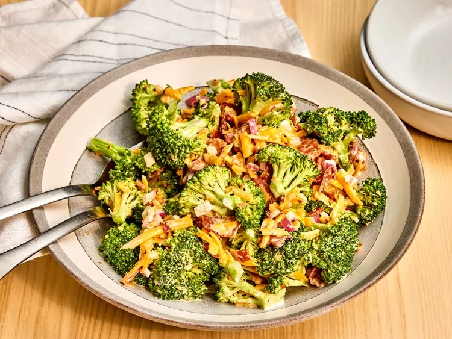

Hot German Potato Salad

Description
This a great salad recipe that will leave you wanting more.
It's really easy to make and can easily be made in large batches for those potlucks.
Ingredients
- 8 slices bacon
- 2 heads fresh broccoli, chopped
- 1 ½ cups sharp Cheddar cheese, shredded
- ½ large red onion, chopped
- ⅔ cup mayonnaise
- ¼ cup red wine vinegar/li>
- ⅛ cup white sugar
- 2 teaspoons ground black pepper
- 1 teaspoon salt
- 1 teaspoon fresh lemon juice
Steps
- Gather all ingredients.
- Place bacon in a large, deep skillet. Cook over medium-high heat until crisp and evenly browned, 8-10 minutes. Transfer to a paper towel-lined plate and crumble when cool enough to handle.
- Combine bacon, broccoli, cheese, and onion in a large bowl.
- Whisk mayonnaise, red wine vinegar, sugar, pepper, salt, and lemon juice together in a small bowl.
- Pour over salad and toss to combine.
- Cover and refrigerate until ready to serve.
Home